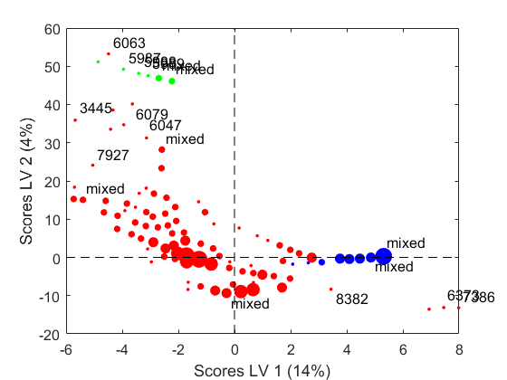
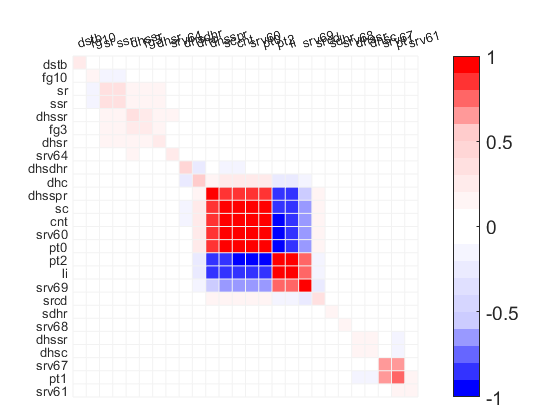
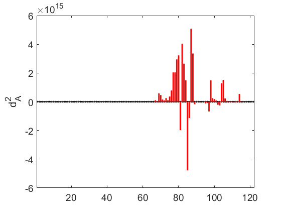
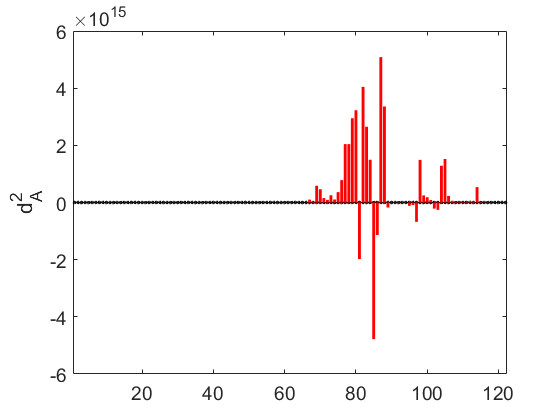

EDA example for Big Data using the MEDA Toolbox.
See README.txt for more details.
Data set and Analisys:
J. Camacho. Networkmetrics: Multivariate Visual Analytics for Networking Data. Technical Report. 2014.
J. Camacho. Visualizing Big data with Compressed Score Plots: Approach and Research Challenges. Chemometrics and Intelligent Laboratory Systems, vol. 135, pp. 110-125, 2014.
the data set was generated from the 1998 DARPA Intrusion Detection evaluation Program, prepared and managed by MIT Lincoln Labs. The objective of this program was to survey and evaluate research in networking intrusion detection. For that, a large data set including a wide variety of intrusions simulated in a military network environment was provided. The original data set included 4.880.000 observations (connection records). The observations belong to 22 different classes, one class for normal traffic and the remaining for different types of network attacks. Four main categories of attacks were simulated: denial-of-service (DoS), e.g., syn flood; unauthorized access from a remote machine, e.g., guessing password; unauthorized access to local superuser (root) privileges, e.g., buffer overflow attacks; and surveillance and probing, e.g., port-scan. For illustrative purposes, the analysis will be restricted to two types of DoS attack, smurf and neptune, and normal traffic. These three classes represent a 99.3% of the total traffic in the data set. For each connection, 42 features are computed, including numerical and categorical features. To consider categorical features in the EDA, one dummy variable per category is included in the data set. The resulting data set contains 4.844.253 observations, each one with 122 features.
coded by: Jose Camacho Paez (josecamacho@ugr.es) last modification: 27/May/17.
Contents
Inicialization, remember to set the path of the toolbox
clc clear load kdd Lmodel = Lmodel_ini; % Initialization Lmodel.update = 2; % Change this to 1 for EWMA and 2 for Iterative Lmodel.type = 2; % Change this to 1 for PCA and 2 for PLS Lmodel.lvs = 1:2; % Number of LVs Lmodel.prep = 2; % X-block prepr. 0: None, 1: Mean-center, 2: Auto-scaling Lmodel.prepy = 2; % Y-block prepr. 0: None, 1: Mean-center, 2: Auto-scaling Lmodel.nc = 100; % Number of clusters Lmodel.var_l = label'; lambda = 1-1e-4; % Forgetting factor in EWMA step = 0.01;
Model building (EWMA or Iterative)
if Lmodel.update == 1 Lmodel = update_ewma(short_list,'',Lmodel,lambda,step,1); % EWMA else Lmodel = update_iterative(short_list,'',Lmodel,step,0,1); % Iterative end
mean centering X and Y blocks........................................... scaling X and Y blocks.................................................. computing XX, XY ....................................................... computing PLS model..................................................... computing maximum and minimum ................................... clustering: packet 1........................................... clustering: packet 2........................................... clustering: packet 3........................................... clustering: packet 4........................................... clustering: packet 5........................................... clustering: packet 6........................................... clustering: packet 7........................................... clustering: packet 8........................................... clustering: packet 9........................................... clustering: packet 10...........................................
Data Analysis
if Lmodel.type==2 % for PLS % Score plot scores_Lpls(Lmodel); % MEDA map = meda_Lpls(Lmodel,0.1,111); % reorder variables [map,ind] = seriation(map); Lmodel.XX = Lmodel.XX(ind,ind); Lmodel.XY = Lmodel.XY(ind,:); Lmodel.centr = Lmodel.centr(:,ind); Lmodel.var_l = Lmodel.var_l(ind); % oMEDAs dummy = zeros(100,1); % Comparison between classes 1 and 19 dummy(find(Lmodel.class==1))=1; dummy(find(Lmodel.class==19))=-1; omeda_Lpls(Lmodel,Lmodel.centr,dummy,1); dummy = zeros(100,1); % Comparison between classes 1 and 11 dummy(find(Lmodel.class==1))=1; dummy(find(Lmodel.class==11))=-1; omeda_Lpls(Lmodel,Lmodel.centr,dummy,1); else %for PCA % Score plot scores_Lpca(Lmodel); % MEDA map = meda_Lpca(Lmodel,0.1,111); % reorder variables [map,ind] = seriation(map); Lmodel.XX = Lmodel.XX(ind,ind); Lmodel.centr = Lmodel.centr(:,ind); Lmodel.centr = Lmodel.centr(:,ind); Lmodel.var_l = Lmodel.var_l(ind); % oMEDAs dummy = zeros(100,1); % Comparison between classes 1 and 19 dummy(find(Lmodel.class==1))=1; dummy(find(Lmodel.class==19))=-1; omeda_Lpca(Lmodel,Lmodel.centr,dummy,1); dummy = zeros(100,1); % Comparison between classes 1 and 11 dummy(find(Lmodel.class==1))=1; dummy(find(Lmodel.class==11))=-1; omeda_Lpca(Lmodel,Lmodel.centr,dummy,1); end 
 
